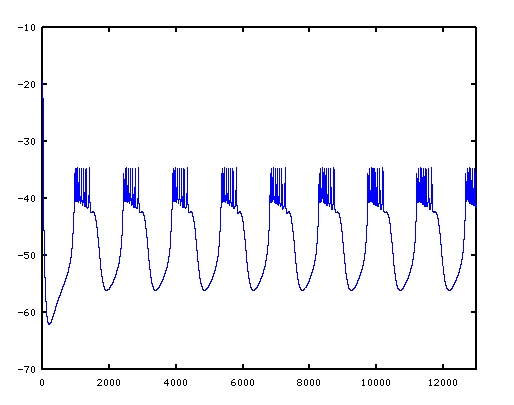

This is the sourse code for the model used in the following paper: Maran SK, Sieling FH, Demla K, Prinz AA, Canavier CC. "Responses of a bursting pacemaker to excitation reveal spatial segregation between bursting and spiking mechanisms". J Comput Neurosci. 2011 Mar 1. [Epub ahead of print] PubMed PMID: 21360137; PubMed Central PMCID: PMC3160527. There are three files - ABPDdriver.c, ABPDcon.h and ABPD.h. ABPDcon.h has the values for different parameters such as conductance strength, reversal potentials etc ABPD.h has the code for kinetic equations and current equations of different channels. Also the code for numerical method. ABPDdriver.c has the main function. To run simulation compile the ABPDdriver file - for example gcc -lm ABPDdriver.c to get executable file and run the executable file with "./a.out". The simulation will create the file tm_volts.xls that contains the time in first column and somatic voltage values in the second column. The units are x-axis in milliseconds and y-axis in millivolts. The output is the somatic voltage trace of the model during spontaneous bursting:  If you have any questions/comments please contact selvamaran@gmail.com.